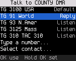
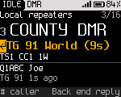
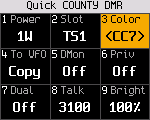

DMR
电台参考说明哪些电台的 DMR 已验证。DMR 语音需要编解码器（安装）以及电台频率中的 DMR ID。
术语
| 术语 | 含义 |
|---|---|
| 通话组（TG） | DMR 组号，可带名称 |
| 联系人 | 一个人：DMR ID、名称、呼号 |
| 通话目标 | PTT 当前的去向：通话组、个人或全呼 |
| 收听列表 | 信道收听的通话组（电台频率中的接收组列表） |
| 最近 | 听到的台站和发起的呼叫，最新的在前 |
| 数字监听 | 播放此时隙上的所有通话组（混杂模式） |
| 时隙（TS） | DMR 信道的两个时隙之一 |
| 色码（CC） | DMR 信道使用的 0 到 15 的数字，类似 FM 上的亚音 |
你会听到谁
当以下任一条件成立时，电台会播放组呼：
- 其通话组是通话目标的通话组，或该呼叫为全呼；
- 其通话组在信道的收听列表中；
- 在回复窗口期间它是回复目标（见下文）；
- 数字监听已开启。
电台会播放发往你的 DMR ID 的私密呼叫。时隙上的其他所有呼叫都会显示为“其他通话组：不播放”，并在其持续期间把信道视为忙。
你会与谁通话
PTT 依次发送到：
- 列表中处于焦点的通话组或个人，仅一次（一次性）。
- 回复窗口运行期间的回复目标。
- 临时选择的通话目标。
- 电台频率中该信道的通话目标。没有通话目标的信道会与其接收组列表中的第一个通话组通话，连列表也没有时使用通话组 9。
主屏幕在“PTT→”之后显示结果。
选择通话目标
在 DMR 信道上长按 # 打开通话目标选择器：信道默认、回复目标、接收组列表中的通话组、最近的通话组，以及“输入号码……”以手动拨号 ID 或通话组。通话目标侧键打开同一个选择器。
通话目标有三种存活期。
| 存活期 | 方式 | 持续时间 |
|---|---|---|
| 一次 | 在任意列表（联系人、最近、查找、选择器、操作）中聚焦通话组或个人并按 PTT | 本次呼叫及其回复窗口 |
| 临时 | 聚焦并按 OK。电台显示“正在通话……” | 直到你切换信道或在主屏幕按 返回 |
| 永久 | 聚焦并长按 OK。电台显示“……现为默认” | 写入信道 |
永久通话目标必须是电台频率中的联系人。输入的号码仅临时使用。电台显示“非已存联系人：仅临时”。
通话目标选择器
在 DMR 信道上按通话目标（或 *、8）。选择器按顺序列出：
| 行 | 标记 |
|---|---|
| 信道的通话目标 | 默认 |
| 最后听到的呼叫：其通话组，私密呼叫时则为呼叫者 | 回复 |
| 信道收听列表中的通话组 | 收听 |
| 来自“最近”的通话组 | 最近 |
| 输入号码…… | |
| 选择联系人…… |
有回复行时，焦点从该行开始。
| 按键 | 对焦点行的作用 |
|---|---|
| PTT | 与其通话一次 |
| OK | 临时使用它 |
| 长按 OK | 设为该信道的默认 |
| # | 打开其操作 |
“输入号码……”打开查找。输入通话组或 ID，聚焦所需行并按 PTT 或 OK。
“选择联系人……”打开联系人，即电台频率中的所有联系人和通话组。转动旋钮，或按 上 和 下 浏览，或输入名称字母、ID 数字来查找。按键属于选择器。在顶部按 上 会跳到最后一个联系人。

在 FM 信道上，通话目标显示“通话目标：仅 DMR 信道”。
输入通话组或 ID
在主屏幕输入数字。查找会列出“通话到 TG 3100”和“私密呼叫 3100”（该 ID 是联系人时带名称）。聚焦一项，按 PTT 通话一次，或按 OK 临时使用。
在集群信道上，查找还会在最后列出“电话 5551234”：在该项上按 PTT 通过系统的电话网关拨打该号码（系统没有电话网关时会拒绝）。来自电话网络的呼叫显示主叫号码；系统未发送号码时显示“电话”。
回复
电台播放某个呼叫后，回复窗口打开。窗口期间 PTT 应答该呼叫。组呼在同一通话组上应答，私密呼叫则回复呼叫者。你自己呼叫之后，PTT 会再次发往同一目标。主屏幕显示“回复→”、目标和倒计时。

窗口持续多久由设置 > 通话与收听 > 回复窗口决定（0 到 30 秒）。0 表示关闭。该设置保持起始值时，适用电台频率中的挂机时间。电台频率中没有挂机时间时，窗口持续 10 秒。在主屏幕按 返回 结束窗口（“回复已结束”）。
稍后回拨
在主屏幕按 # 打开当前或最近呼叫者的操作。数字键选择操作。

| # | 操作 | 作用 |
|---|---|---|
| 1 | 通话对象 | 临时在他们被听到的通话组上通话。私密呼叫之后则与他们通话。在此行按 PTT 通话一次 |
| 2 | 私密呼叫 | 临时私密呼叫他们。在此行按 PTT 呼叫一次 |
| 3 | 消息 | 打开消息编辑（消息） |
| 4 | 电台检查 | 检查他们的电台是否开机且在范围内 |
| 5 | 呼叫提示 | 寻呼他们的电台 |
| 6 | 位置 | 尚未构建 |
| 7 | 存为联系人 | 用其 ID 和名称打开新建联系人（联系人）。已是联系人时显示“已在联系人中” |
| 8 | 语音状态 | 尚未构建 |
| 9 | 保存到信道 | 仅在信道有临时更改时显示 |
| 最后 | 请求数据 | 仅在集群信道上显示。向对方电台请求其短数据；回复以消息形式到达。没有回复时显示“请求：无数据” |
对通话组而言，操作是“通话对象”“设为默认信道”和“消息”，不是联系人时还有“4 存为联系人”。
尚未听到任何呼叫时，# 显示“暂无通话记录”。
最近
OK、3。“最近”列出最后听到的 12 个台站和发起的呼叫，最新的在前。你发起的呼叫以箭头开头。发给你的呼叫会高亮，私密呼叫显示“你”或“私密”。最近保存在内存中，重启后为空。

PTT 与焦点条目通话（台站被听到时所在的通话组）。OK 临时使用它。长按 OK 使其永久。# 打开其操作。
联系人
OK、1 列出电台频率中的所有联系人和通话组。输入名称字母或 ID 数字可筛选。联系人用于你要呼叫的通话组和人；ID 数据库为其他所有人命名。OK 临时与焦点条目通话。长按 OK 使其成为信道默认。PTT 与其通话一次。# 打开其操作。


新建联系人
可在电台上从联系人、号码或呼叫创建联系人：
- 在联系人（OK、1）中，第一行是新建联系人。按 OK，然后输入名称和 ID 并选择类型。
- 在主屏幕输入 ID 或通话组。没有联系人使用该号码时，查找的最后一行是“创建联系人 3100”。按 OK。最多 6 位数字作为通话组，7 位及以上作为个人。
- 在呼叫者或通话组的操作（#）中选择存为联系人。

| 行 | OK 的作用 |
|---|---|
| 名称 | 用键盘输入名称（文本输入） |
| ID | 输入 ID。返回 收回一位数字，OK 保留 |
| 类型 | 通话组或私密 |
| 时隙 | 信道、TS 1 或 TS 2 |
| 保存 | 保存。在任意行长按 OK 也会保存 |
电台会拒绝已存在的联系人（“已是联系人：……”）。编辑或删除已存储的联系人尚未构建：请使用 qdmr。从 CPS 写入电台频率会替换你在电台上创建的联系人，因此请先把电台频率读入 CPS。
私密呼叫
- 从联系人：OK、1，找到那个人，#、2（私密呼叫），然后 PTT。或聚焦该人并按 PTT。
- 按 ID：在主屏幕输入 ID，聚焦“私密呼叫……”并按 PTT。
- 要应答私密呼叫，请在回复窗口期间按 PTT。
通话时顶行显示“私密”，屏幕显示联系人名称（发射）。
时隙与色码
在 DMR 信道上，* 打开这些磁贴：

| 按键 | 磁贴 | 作用 |
|---|---|---|
| 1 | 功率 | 在电台的最低档、默认档和最高档之间步进（功率级别） |
| 2 | 时隙 | 临时在时隙 1 和 2 之间切换 |
| 3 | 颜色 | 打开色码编辑器 |
| 4 | 模式 | 显示 DMR。按下可临时在同一频率上以 FM 收听和通话 |
| 5 | 数字监听 | 开或关数字监听 |
| 6 | 加密 | 开或关加密。在 VFO 中此磁贴为发射频率（分离） |
| 7 | 双守候 | 开或关双守候 |
| 8 | 通话对象 | 打开通话目标选择器 |
| 9 | 亮度 | 打开亮度编辑器 |
| 0 | 打开设置 |
要更改色码，按 *、3。按 上 或 下，或输入代码（0 到 15）。按 OK 应用。新色码在编辑器关闭时生效。

时隙和色码是临时的。发射时无法更改。长按 OK 可将它们保存到信道。在 VFO 中它们是 VFO 自身的设置并会保留（VFO）。
唤醒中继台
空闲的中继台在承载你的呼叫前可能需要唤醒。在中继信道（收发频率不同）上，按下 PTT 时电台会发送唤醒，然后等待中继台应答。短按即可：松开 PTT 后电台会继续尝试，直到通常的尝试次数。
| 听到 | 含义 |
|---|---|
| 允许发射提示音（若已开启） | 中继台已应答。若你仍按住 PTT，呼叫开始；若已松开，则不再发送，你可以再按 PTT |
| 低声错误音 | 中继台无应答。请检查色码和距离 |
通话许可音
通话许可音告诉你电台已占用信道，可以讲话了。在设置 > 声音 > 通话许可音中可为所有信道关闭它，或用信道的通话许可音字段为单个信道关闭。
多数电台在你的语音开始发射时播放两声短促的提示音。提示音会被发射出去的电台改为在发射前播放一声短促的提示音（电台说明）：
| 屏幕 | 发生什么 |
|---|---|
| 唤醒中继 | 在中继信道上，电台唤醒中继台（见上） |
| 已准许 | 信道归你使用：提示音在电台仍在接收时播放 |
| 通话中 | 电台正在发射。开始讲话 |
等待提示音的时间不到半秒。在此期间松开 PTT 会取消呼叫。
你听到的呼叫结束时的提示音是呼叫结束音。信道的通话许可音字段也会关闭它。
数字监听
数字监听会播放此频率、时隙和色码上的所有通话组。
- 在 DMR 信道上按监听（短按，松开时生效）。电台显示“数字监听开”，标签显示“数字监听”。再按一次关闭。在 FM 信道上，同一键在按住期间打开静噪。
- 或 *、5。
数字监听会一直保持，直到你关闭它、切换信道或模式，或在主屏幕按 返回。开启期间，回复窗口允许你用 PTT 应答听到的任何呼叫。
加密
RadioFoundry 支持两种基础加密：Motorola 基础加密（密钥 1 到 255）和 Anytone 16 位基础加密。基础加密是对语音的固定置乱。它能挡住随意收听者，但不是加密。该置乱尚未与其他电台对照验证（电台参考）。
- 电台只有持有匹配密钥时才会播放加密呼叫。没有密钥时，呼叫显示为“已加密：不播放”。
- 使用更强加密的呼叫（发送 PI 头）绝不会播放。
- 短信和其他数据也使用该密钥。使用 Motorola 密钥时，数据以同样方式置乱，电台也能读取用其密钥置乱的数据。ETSI 短格式的消息无法置乱，因此使用 Motorola 密钥时会失败：请使用 ETSI 或 Motorola（消息）。Anytone 基础加密没有数据形式，因此使用 Anytone 密钥时电台不发送短信或其他数据：你发送的短信会失败。电台无法读取的置乱数据不会显示。
- *、6 为你的呼叫打开加密（“临时开启加密”）。主屏幕显示“加密”。在主屏幕按 返回 会再次关闭。
要在电台上设置密钥，请打开设置 > 加密（OK、7、4）。
- 在密钥类型上按 OK，直到显示 Motorola 或 Anytone。
- 在密钥上按 OK。用数字键以十进制输入密钥（Motorola 1 到 255，Anytone 0 到 65535）。再按 OK。
电台会在重启后保留密钥。把类型设回“关”会移除密钥并关闭加密。电台频率目前无法保存加密密钥。开发者也可用调试工具通过 USB 载入密钥：
tools/rfoundry_debug.py radio privacy moto 5 # Motorola 基础加密，密钥 5
tools/rfoundry_debug.py radio privacy anytone 4660 # Anytone 基础加密，密钥 4660
tools/rfoundry_debug.py radio privacy off
没有密钥时，加密磁贴显示“无加密密钥：在设置 > 加密 中设置”。密钥在电台闪存中未加保护地保存。
呼叫中的位置
有些 DMR 电台会在语音呼叫中发送位置（ETSI GPS Info）。呼叫者发送时，接收屏幕会显示距离和方向，例如“12.3 km 东北”。电台不知道你自己的位置时，会显示呼叫者的坐标。“最近”会随呼叫保留距离。
当工具 > APRS > DMR 呼叫中的位置开启（默认关闭）且电台知道自己的位置时（见 APRS），你的位置会随呼叫发送。每隔一个超帧携带它，与你的通话者别名轮流。
通话者别名
接收屏幕会显示其他电台发来的通话者别名，随到随显。设置 > 通话与收听 > 显示主叫别名可关闭。当电台频率中信道的通话者别名设置要求时，电台会把电台频率中的呼号（8 个字符）作为自己的别名发送。
漫游
在由多个站点承载相同通话组的 DMR 中继系统中，当前中继台信号变弱时，电台可以自行转到更好的中继台。漫游按区域开启。
- 把同一系统的中继信道放入一个区域，每个都设为相同联系人。
- 选择其中一个，然后打开工具 > 漫游并开启在此区域漫游。
空闲时，电台监视所在中继台的信号。信号持续低于阈值时，电台会收听区域内其他站点，并转到能听到的最强站点。在呼叫、扫描或热点使用期间，在你发射时，以及呼叫结束后 3 秒内（可能收到回复）绝不切换。主屏幕在中继台标签旁显示 Roam，当前站点较弱时显示琥珀色 Roam?。搜索期间状态条显示 ROAM。toast 会显示“已移动到”和新信道名称。
| 行 | 作用 |
|---|---|
| 在此区域漫游 | 为当前区域开启或关闭漫游 |
| 立即漫游 | 立即搜索各站点 |
| 锁定到此站点 | 停留在当前中继台，直到你解锁（主屏幕显示 Lock） |
| 站点测量 | 中继台信标的对齐方式：同步（默认）、按站点、关闭 |
| 信标间隔 | 中继台发送信标的频率：60 秒（默认）、2/5/10 分钟、10 到 30 秒，或无 |
| 信标长度 | 每个信标持续多久：1 到 10 秒（默认 4 秒） |
| 唤醒探测 | 开：电台会短暂发射以测量安静的中继台。这会发射。默认关闭 |
许多中继系统让每个中继台在空闲时短暂发射。这就是“信标”，例如每分钟 4 秒，所有站点同一时刻。电台会学习中继台信标的到来时间。每个信标期间，它会跳到其他几个站点，每个不到一秒，测量后返回。屏幕仍显示你的中继台。按键、PTT 或被测站点上的呼叫会让它立即返回。电台离开期间在你中继台上开始的呼叫最多会晚约 3 秒加入，因此有通话后电台会暂停测量一段时间。你的中继台变弱时，电台会在下一个信标时检查测得的最佳站点并转过去，通常在一分钟内。把信标间隔和信标长度设为与系统一致（可询问其运营者）。若各中继台按自己的时间表发送信标，选择按站点。若它们不发送信标，选择无：电台将依赖听到的呼叫。在电台了解时间表之前，屏幕显示“信标：学习中”，之后显示“信标：测量中”。
站点是区域中与你所选信道具有相同联系人的中继信道（收发频率不同）。当区域中任何信道设置了电台频率的漫游标志时，只有带标志的信道才是站点。至少需要两个站点。你自己切换信道或区域会使新信道成为当前站点。
阈值（默认 -105 dBm）、迟滞（6 dB）以及可选的定期搜索其他站点目前通过调试链路设置（dmr-roaming 第 5.1 节）。调试链路还设置运行 MMDVM SFR 的热点可为漫游电台发送的空闲信标（rpt_beacon，默认关闭）。
集群系统
DMR Tier III 集群系统为每次呼叫分配一个信道。电台停留在系统的控制信道上，在那里注册，然后转到系统分配的信道。每次呼叫的频率、时隙和色码由系统决定，因此集群信道自己没有这些参数。
每款电台上已检查的项目见功能矩阵。
设置
在电台频率编辑器中（编程）：
- 在系统选项卡上添加一个类型为 T3 的系统。输入它的网络模型、NET、类别和色码，并在信道和站点下输入它的控制信道。这些数值由系统的运营者提供。
- 新建一个信道，把它的模式设为 T3 并选择该系统。它的联系人是你通话的对象；它的接收组列表是你能听到的通话组。
- 把该信道和其他信道一起放进一个区域。
| 设置 | 作用 |
|---|---|
| 仅收听 | 电台跟随系统及其呼叫，但绝不在那里注册或发射。在运营者启用你的电台 ID 之前使用它 |
| 需要密钥 | 用于对电台进行鉴权的系统。在密钥下设置密钥；没有密钥时该信道无法使用 |
| 本系统上的电台 ID | 你在该系统上的 ID，当它不是电台的 DMR ID 时填写 |
| 备用信道 | 找不到系统时使用的常规信道（见下）。信道可以指定自己的备用信道，或不设 |
在编辑器中设为仅接收的信道在系统上仍然仅接收：电台只收听，并拒绝 PTT。
通联
选择该信道。主屏幕显示系统的名称以及电台在那里的状态，取代时隙和色码：
| 主屏幕显示 | 含义 |
|---|---|
| 搜索中 | 正在寻找系统的控制信道 |
| 正在注册 | 已找到；正在向系统注册 |
| 就绪 | 在控制信道上。按住 PTT 发起呼叫 |
| 通话中 | 在系统分配的信道上通话 |
| 已拒绝 | 系统拒绝了注册。PTT 被拒绝 |
| 备用信道 | 未找到控制信道：在备用信道上 |
| 系统未设置 | 信道的系统不存在、没有控制信道或缺少密钥。该信道仅接收 |
按住 PTT：电台向系统请求一个信道，系统分配后即可讲话。系统拒绝或不应答时，PTT 被拒绝。通话目标是信道的联系人，或像在任何 DMR 信道上一样由你选择的目标（选择通话目标）。
区域和信道列表在原本显示频率的位置显示集群信道的系统名称。系统未设置的信道会变暗，切换信道时会跳过它。扫描会跳过集群信道。
备用信道
电台在保持时间内（30 秒，除非系统另有设置）找不到控制信道时，会转到备用信道，并像在任何信道上一样工作。该信道安静时，它每 10 秒重新寻找一次系统。找到后它会返回，发出提示音并显示“已回到”和系统的名称。
遥晕与遥毙
系统可以禁用它不再信任的电台。两者默认关闭，除非你为该系统打开（接受遥晕、接受遥毙）。
| 发生什么 | 如何解除 | |
|---|---|---|
| 遥晕 | 电台留在系统上，但不能在那里呼叫或跟随呼叫。关机后仍然保持 | 系统的复活命令，或恢复出厂设置 |
| 遥毙 | 所有 DMR 功能停止，包括每个信道和热点。FM 仍然可用。只接受来自电台持有其密钥的系统的遥毙 | 只能恢复出厂设置 |
在没有密钥的系统上，遥晕命令按收到的内容直接执行，任何发出该命令的发射机都能使它生效：在这样的系统上请保持接受遥晕关闭。